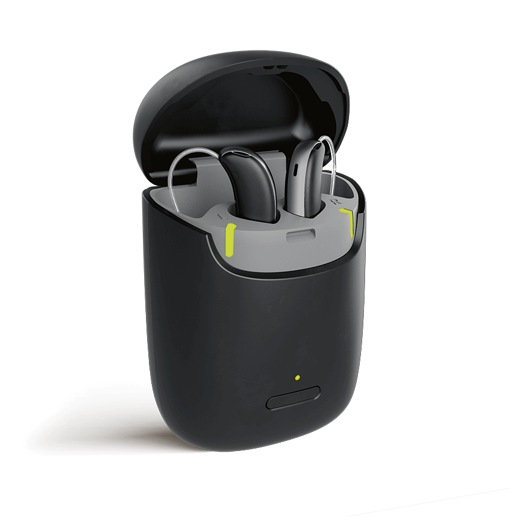
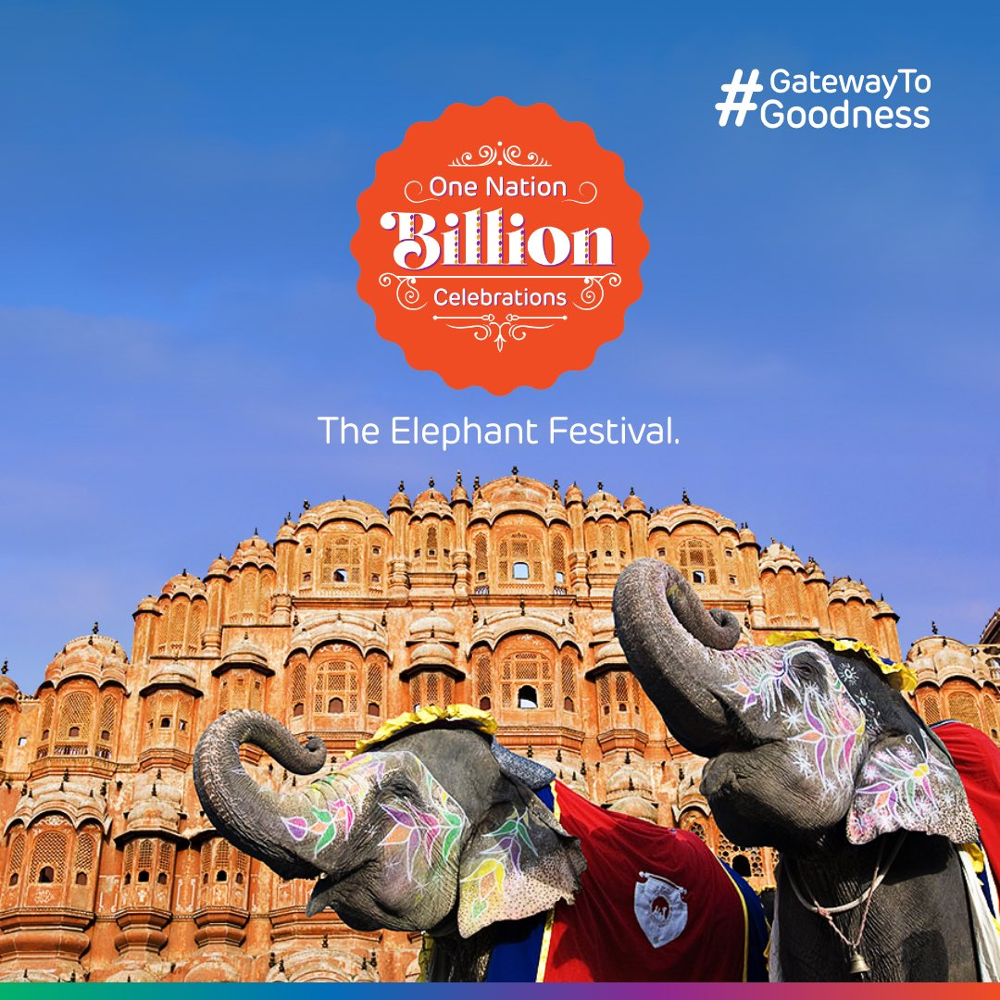
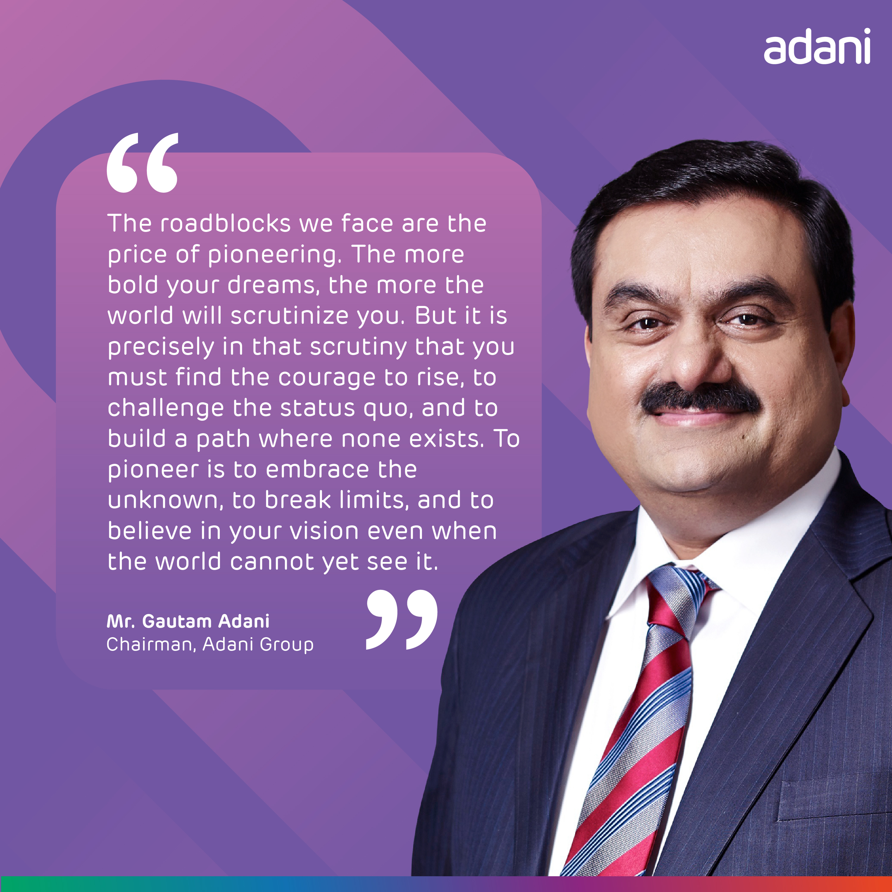

Selected Projects
( 04 Works )
Where Forever Young Begins
Dismantling geriatric stigma by repositioning hearing tech into active wellness hardware.

Hum Karke Dikhate Hain
Re-anchoring a national infrastructure narrative in community accountability across 28+ cities.

One Nation, Billion Celebrations
Transforming airport transit corridors into immersive cultural hubs during festive travel peaks.

Building the Public Voice of Leadership
Speeches, national op-eds, and founder narrative architecture driving high-trust audience scale.